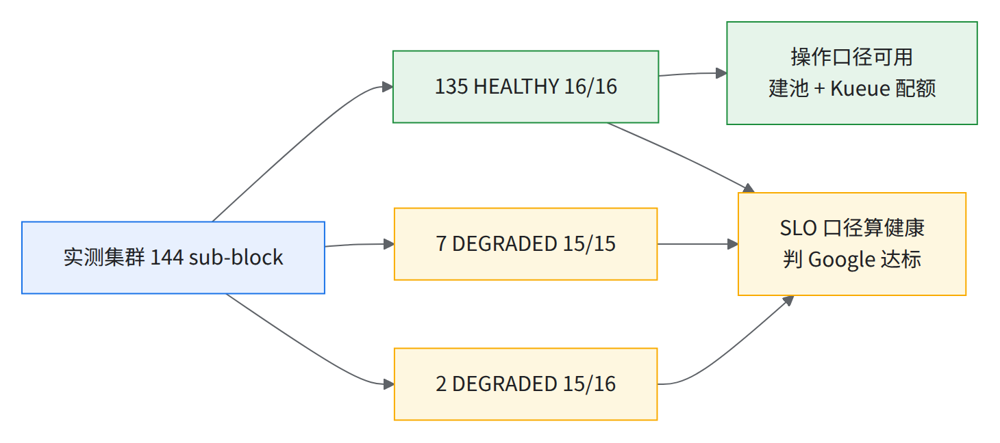
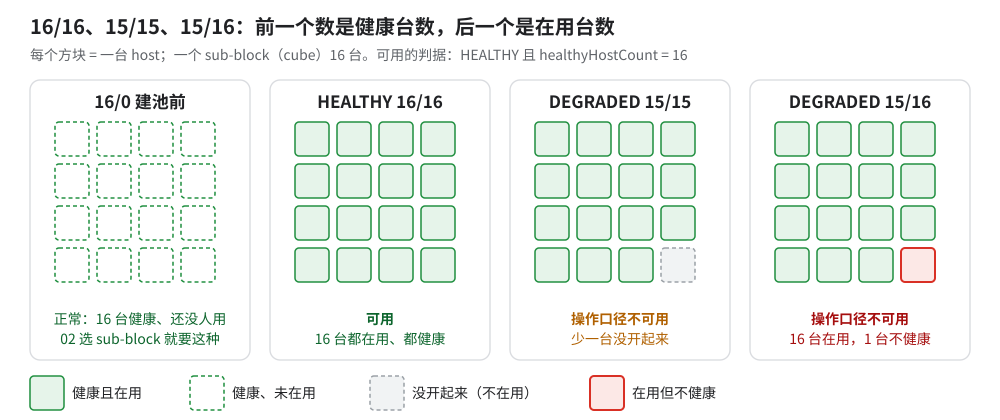
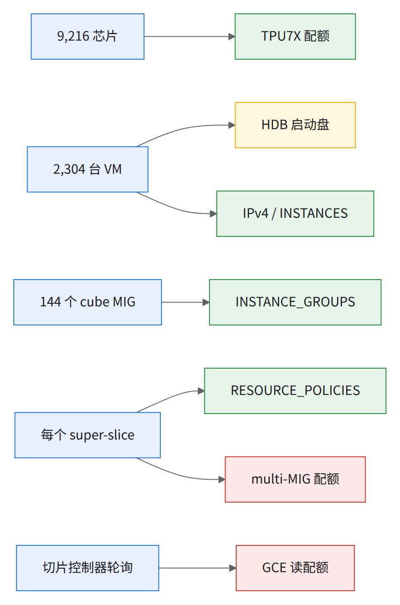
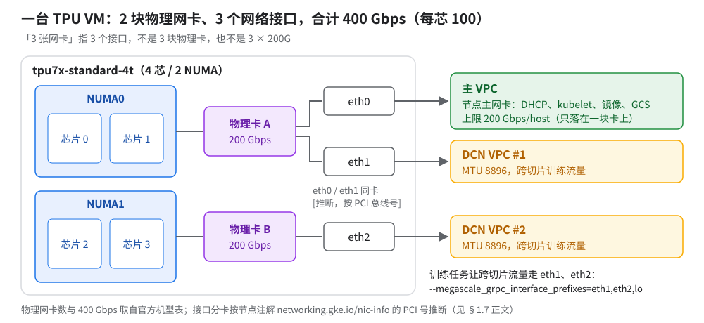

01 容量核对与前置条件
建集群前数清能用几个 cube，定下配额、版本、网络、存储、使用方口径。 漏项不当场报错，以「假缺货」或「悄悄出错」回来；网络、多网卡、Pod CIDR 建完不能改，改就重建全部 144 个池。
- 144 个 sub-block 全数到
- ≥130 个 HEALTHY 16/16（SLO 线）
- ≥2,336 个 regional IPv4 配额
- 8–14 周 HDB 配额交期
- 3 个 VPC MTU 8896，建完不能改
变量：全书只有一个变量块
scripts/env.sh。
- 脚本整包在 scripts/ 目录页下载
runbook-scripts.tar，解压后在解压目录里执行。cp runbook/scripts/env.sh ~/runbook-env.sh、填好<…>，包括RUNBOOK_DIR（05 / 07 章靠它）。CLUSTER长度上限随 zone 变（us-central1 ≤17 字符），rb_env_check会算：bashsource ~/runbook-env.sh && rb_env_check PROJECT REGION ZONE RESERVATION # 本章还用不到 CLUSTER / GKE_VERSION本章用到
$PROJECT（项目 ID 不是编号）、$REGION、$ZONE、$RESERVATION（到手前留空会被拦）、$BLOCK（默认${RESERVATION}-block-0001）。$CUBES_EXPECTED（144）、$NODES_PER_POOL（16）、$TPU_DISK_SIZE_GB（算 HDB）、$CUBES_SLO（SLO 线，默认 130）、$STATE_DIR（存清单）。- §1.5 ③ 另用
$DATA_BUCKET$MTC_BUCKET$NS$KSA；$CLUSTER、$NODE_VERSION等 02 才用。
本章只读，只有 §1.5 改项目状态（带验证与回滚）。
⚠️交期长的先提，别等读到那一节
1.0一键预检：scripts/01-precheck.sh
scripts/01-precheck.sh 每项打印 PASS / FAIL / WARN / MANUAL，FAIL / WARN 下一行写「怎么办」。
它查什么、不查什么（绿了不等于本章做完）：
- 查：§1.1–§1.4 全部、§1.5 ①②（第 0–6 段）。
- 第 7 段（未实测，只报 WARN / MANUAL）：GKE_VERSION 对 super-slicing / sub-slicing / MTC 三条下限、该版本在本 zone 还提供不提供、数据桶在不在且授权给了
ns/$NS/sa/$KSA、MTC 桶在不在且开了 HNS。 - 不查：MTC addon 是否开、multitier driver 实际版本（要集群建好，见 07 §7.1 第 1–2 条）；
ENV_TAR、GITHUB_SECRET（06c 章建，见 §1.5 ④）；§1.6 BOM 的 Google 书面确认、§1.7 网络设计、§1.9 决策。
source ~/runbook-env.sh && runbook/scripts/01-precheck.sh # 没有 quotas API 权限时加 --skip-quota
脚本分 0–7 共八段：第 3–6 段依次对应 §1.1–§1.4，第 7 段对应 §1.5 ③④ 和 §1.6 的版本下限。有 FAIL 退出码 1，按该项的「怎么办」处理；没有 FAIL 退出码 0，WARN / MANUAL 逐条下结论。
- MANUAL = 要 Google 书面确认（multi-MIG 配额、GCE 读配额、聚合
CPUS）；sub-block 明细存$STATE_DIR/subblocks-<时间>.tsv。 - 拿到 reservation 当天跑一次，交付当天再跑。
工具前提（第 1 段查）：
| 工具 | 要求 | 为什么 |
|---|---|---|
gcloud（GA 轨道即可） |
gcloud compute reservations sub-blocks list --help 能跑 |
reservations blocks / sub-blocks 已在 GA 轨道（SDK 587 核过）；旧 SDK 没有就 gcloud components update（注 1） |
gke-gcloud-auth-plugin |
在 PATH 里 | kubectl 连 GKE 要它 [https://cloud.google.com/kubernetes-engine/docs/how-to/cluster-access-for-kubectl] |
kubectl |
与集群差 ≤1 个 minor [推断：K8s 版本偏差策略] | 02 起全程用 |
helm |
≥ 3.8.0 | 03 走 oci://registry.k8s.io/... chart；OCI registry 支持在 3.8.0 GA 源https://github.com/helm/helm/releases/tag/v3.8.0 |
jq、python3、envsubst（gettext） |
近期版本 | — |
-
注 1：GA 指南示例写的是
gcloud beta；在 SDK 587 上核过，GA 轨道已有reservations blocks / sub-blocks、resource-policies，且 compute v1 与 beta API 的 ReservationBlock / ReservationSubBlock 字段一致，本书统一用 GA。仍要 beta 组件的只有两处：08 章
monitoring channels list（GA 没有）和 05 章清 multi-MIG 的隐藏参数。05 章的gcloud alpha compute multi-migs要 alpha 组件且限白名单项目。
本节可能踩到的问题：reservation 名字填错 / 路径用了 project number · 健康信号各说各话 · 命名与长度限制
1.1核对 reservation 本体
确认是 All Capacity，记下到期时间。
[ -n "$RESERVATION" ] || echo "RESERVATION is empty - STOP"
gcloud compute reservations describe $RESERVATION --zone $ZONE --project $PROJECT --format=json > reservation.json
| 字段 | 期望值 |
|---|---|
status |
READY |
advancedDeploymentControl.reservationOperationalMode |
ALL_CAPACITY |
deploymentType |
DENSE |
schedulingType |
GROUPED |
specificReservationRequired |
true |
aggregateReservation.reservedResources[0].accelerator.acceleratorCount |
9216 |
aggregateReservation.vmFamily |
VM_FAMILY_CLOUD_TPU_POD_SLICE_TPU7X |
deleteAtTime |
写进运维日历；到期 GKE 立即删 TPU 节点 → 见经验教训第 4 条 |
⚠️芯片总数读 aggregate 字段，先例那个 count 在这里恒为空先例查
specificReservation.count（期望 ≥2304），并规定「An empty count means the chip total is unconfirmed — escalate, do not assume 9216」。All Capacity 是 aggregateReservation，实测 describe 里根本没有specificReservation块，总数在上表acceleratorCount=9216——照抄先例那条查询会恒报空、恒升级。规则照搬到对的字段：acceleratorCount为空或不等于约定数 → 升级，不默认 9,216 [推断：先例规则的意图是「总数未确认就别假设」，换字段不改意图]。
- 失败多半是名字填错 → 见经验教训第 1 条。
deleteAtTime不足 30 天报 WARN。
本节可能踩到的问题：「缺货」多半不是缺货 · 电力事件与 protection tier 错配
1.2核对 block / sub-block 健康
1 个 block、144 个 sub-block，数出真正可用的 cube。
gcloud compute reservations blocks list $RESERVATION --zone $ZONE --project $PROJECT --format "value(name)"
gcloud compute reservations blocks describe $RESERVATION --block-name $BLOCK --zone $ZONE \
--format "value(resource.reservationSubBlockCount)" # 期望 144；注意 describe 的输出外包一层 resource:
gcloud compute reservations sub-blocks list $RESERVATION --zone=$ZONE --project=$PROJECT \
--block-name=$BLOCK \
--format='table(name.basename(),healthInfo.healthStatus,healthInfo.healthyHostCount,inUseHostCount)'
期望：144 行；可用 cube = healthStatus=HEALTHY 且 healthyHostCount=16。

读图：按操作口径做计划（含 Kueue 配额），DEGRADED 只在 SLO 口径（00 §4）算健康。图中是实测集群的一次快照（135 + 7 + 2 = 144）；参考集群另一次快照里也有若干 DEGRADED。

读图：前数 healthyHostCount、后数 inUseHostCount；后两种配不满 16 节点池。
- 02 选 sub-block 要求 in-use 为 0；实测集群快照在建池后。
- 别和节点池「15/16」混：02 那是 15 个节点 Ready。7 个 15/15 的 DEGRADED sub-block 里，5 个上面有实测集群的池、都报 ERROR 15/16（02 §2.5），另 2 个不在实测集群的一百多个池里。
- 计数口径先写清：同一时刻「有一台机器不可用整个 cube 就不算」、GCE sub-block HEALTHY、SLO 的「available + degraded」三种数法会给出 130 / 127 / 128 三个数；先例 pod 交付时一百三十多个、几天后掉到一百二十出头，保底按一百二十出头估。本手册用 GCE HEALTHY 16/16 且能成片，DEGRADED 不算，写进书面约定和 SLO→ 见经验教训第 3 条。
- 订了 ≠ 能用 → 见经验教训第 3 条；
healthyHostCount=16也不保证能开机，判据见 02 §2.7。 - block 级
degradedSubBlockCount: 9, healthySubBlockCount: 135。脚本判reservationSubBlockCount = $CUBES_EXPECTED、HEALTHY 16/16 ≥$CUBES_SLO。
验收时还要一张「健康但有待办维护」清单。 sub-block 报 HEALTHY 16/16，不代表上面没有排着的维护：这类 cube 交付后几天内就会被拉去修，算进健康数会高估第一周的可用量。
- 验收单上让 Google 列出：所有带「计划外维护进行中 / 待执行」的 sub-block（不论 HEALTHY 还是 DEGRADED）、每个的维护原因和预计时间。
- 这些 cube 先不进保证队列配额，等维护做完、过了进门关再放（08a §8a.3）[推断]。
- 自己能查的部分：
gcloud compute reservations blocks describe … --format=yaml里每个 sub-block 的维护字段，和 §1.3 的实例upcomingMaintenance。
本节可能踩到的问题：健康信号各说各话 · Google 交付前的 qualification 不压 OCS / 大切片
1.3核对维护状态
gcloud compute reservations blocks describe $RESERVATION --block-name $BLOCK --zone $ZONE --format=json \
| python3 -c "import json,sys; d=json.load(sys.stdin); d=d.get('resource',d); print(json.dumps(d['reservationMaintenance'],indent=1))"
⚠️实测集群上：
blocks describe的输出外面包了一层resource:jq keys=["resource"]；blocks list没有这层（它返回的是 list）。要从.resource取，否则会误判成pending=0 ongoing=0 PASS（实测当时 ongoing=3）。
- 字段：
maintenanceOngoingCount / maintenancePendingCount / upcomingGroupMaintenance.{maintenanceStatus,type,maintenanceReasons,canReschedule}；非 0 报 WARN，逐个看用 08 §8.2。 - 实测集群采集时 3 个
UNSCHEDULED+FAILURE_INFRA进行中，canReschedule: false。 - GROUPED 维护：pending = 已通知未执行；可触发 = 自己提前触发即自触发维护。
交付前：可触发的 pending 维护全部做完。再查一次 upcomingGroupMaintenance，凡要求在交付日之前结束的 pending 维护都先手动触发；用 sub-slicing 时尤其要做（见下面的先例）。
- 先例：资料里出现过一次性要求——sub-slicing 上线前，某一时间窗内到期的 pending 维护须先手动触发。那个窗口已经过了；交付时有没有新的类似窗口，以
upcomingGroupMaintenance和 Google 通知为准。
本节可能踩到的问题：主机维护不按 cube · sub-slice 建不起来
1.4配额（读 limit，不读 usage；上线当天再读一次）
| 配额 | 为什么要它 | 整 pod 需求 | 读法 / 出处 |
|---|---|---|---|
TPUS-PER-TPU-FAMILY-per-project-region (TPU7X) |
每芯 | ≥ 9,216（先例按略高于 9,216 申请） | gcloud quotas info describe（下）；新项目初始 limit 远低于 9,216，提配额申请后才到 ≥ 9,216 |
HDB-TOTAL-GB-per-project-region |
每 VM 一块 HDB 启动盘 | 2,304 × 启动盘 GB（100 GB 时 230,400 GB） | 计 HDB 不计 SSD；交期 8–14 周 → 见经验教训第 5 条 |
HDB-TOTAL-IOPS-per-project-zone |
启动盘 IOPS [推断] | 按启动盘数量申请，以 Google 核算为准 | |
IN_USE_ADDRESSES / regional IPv4 |
每节点（含 CPU） | ≥ 2,336 | |
INSTANCES / INSTANCE_GROUPS |
每 VM 一个；每 cube 一个 MIG | ≥ 2,304+CPU 节点 / ≥ 144+CPU 池+余量 | |
RESOURCE_POLICIES |
每个 super-slice 一个 workload policy（05 §5.1） | 同左 | |
| multi-MIG 配额 | 每个 super-slice 一个 MMIG；删除异步留余量 | 先例 override 到约千 | → 见经验教训第 5 条 |
GCE ReadsPerMinutePerProjectPerRegion / Writes |
切片控制器轮询；限流把健康切片误报 Unknown | (MIG+MMIG)×12/min；最坏 (144 + 144) × 12 ≈ 3,456 reads/min [推断] | 走配额提升申请 → 见经验教训第 52 条 |
| CPU（N2/N2D/…） | 系统组件、CPU 任务 | 系统池 + CPU 池 | 配额 ≠ 库存 |
| Cloud Logging 摄入 | 先例交付时打满过 | — | |
GCS 读 QPS（NonMultiregionRequests，按 region） |
全体同时启动读数据和检查点；被限流 → 启动时 RESOURCE_EXHAUSTED → hang 检测 → 整作业重启 |
另一个先例（数千芯规模）申请到默认值的约 2 倍（峰值数十万 rps） | → 见经验教训第 5 条 |
| Anywhere Cache egress / 存储容量 | 数据与检查点读缓存 | 先例为数十 Tbps 出口、PiB 级容量 | → 见经验教训第 5 条 |

读图：绿色自己提；黄色最早提；红色开 case 要 Google 书面确认。
gcloud compute regions describe $REGION --project $PROJECT --flatten="quotas[]" \
--format="table(quotas.metric,quotas.limit,quotas.usage)" \
| grep -E "^(E2_CPUS|N2_CPUS|N2D_CPUS|CPUS|IN_USE_ADDRESSES|STATIC_ADDRESSES|SSD_TOTAL_GB|RESOURCE_POLICIES) "
for Q in HDB-TOTAL-GB-per-project-region TPUS-PER-TPU-FAMILY-per-project-region; do
gcloud quotas info describe "$Q" --service=compute.googleapis.com --project="$PROJECT" --format=json \
| python3 -c "
import json,sys
for x in json.load(sys.stdin).get('dimensionsInfos',[]):
d = x.get('dimensions',{})
if d.get('region') == '$REGION':
print('$Q', d, '->', x.get('details',{}).get('value'))
"
done
gcloud quotas preferences list --project="$PROJECT" --format=json # 查是否有人在 Console 里把 preferredValue 改小了（先例被改小约一个数量级）
- HDB 和 TPU7X 不在
regions describe里。 - 脚本判据：
INSTANCE_GROUPS ≥ 154（144 + 10 余量 [推断]），其余同表；reconciling中的申请没生效，只信quotas info describe。
配额之外：2,000 节点以上才撞上的默认值。 下面这些不在配额页上，也不报配额错误，到了这个规模才一个个冒出来。先例整 pod 集群（9,216 芯 = 2,304 节点）每一项都是撞上了才提单。交付前一次调好：
| 默认值 | 先例在多大规模撞上 | 交付前做什么 | 页 |
|---|---|---|---|
节点 ARP 表 gc_thresh3=1024 |
约 2,300 节点 | 调 sysctl + konnectivity 反亲和 | 经验教训第 60 条 |
| kube-state-metrics 内存上限 500Mi | 两千多节点 / 几万 pod | 请 GKE 为大规模集群调高 KSM 资源配额 | — |
GCS NonMultiregionRequests 300k QPS |
两个数千芯作业同时启动 | 申请后端 override（见上表 GCS 行） | 经验教训第 5 条 |
| HDB IOPS 6M | 2,304 节点 | 按算式提前提（见上表 HDB IOPS 行） | 经验教训第 5 条 |
| 多层检查点 rank server 客户端 5 ms 轮询 | 数千芯作业（每 host 一个 pod） | rank server 放专用节点；上修复镜像 | 经验教训第 62 条 |
| 控制面 qps / 调度 profile | 每秒建 1,000 个 pod | 请 GKE 打上高 pod 吞吐参数组 | 经验教训第 53 条 |
- 这几项都要 Google 动服务端或给镜像，开 case 的时间要算进交付时间线（高 pod 吞吐那组先例用了约 2.8 天 [推断]）。
⚠️HDB 交期 8–14 周，定下交付时间就提先例用 Google 侧的容量调配手段绕开。未决：是否吃聚合
CPUS（224 vCPU × 2,304 = 516,096），先例未验证。
1.5IAM 与 API
前提：roles/serviceusage.serviceUsageAdmin + roles/resourcemanager.projectIamAdmin，或 Owner [推断：两个命令各自要求的权限]。
① 开三个 API：
gcloud services enable serviceusage.googleapis.com container.googleapis.com compute.googleapis.com --project $PROJECT
serviceusage用来问另两个开没开。验证：gcloud services list --enabled --project $PROJECT --format='value(config.name)' | grep -E '^(serviceusage|container|compute)\.googleapis\.com$'→ 期望 3 行。幂等。
⛔别用 disable 回滚
gcloud services disable container.googleapis.com会连带删掉 GKE 集群 [推断：API 停用会影响其资源]。
② 运维角色。经组审批「can take days」，最长前置项，提前申请。
OPS_USER=<运维账号邮箱> # 每个要授权的人跑一遍；给当前登录的自己授权：OPS_USER=$(gcloud config get-value account)
for R in roles/container.admin roles/compute.networkAdmin roles/iam.serviceAccountUser; do
gcloud projects add-iam-policy-binding $PROJECT --member="user:$OPS_USER" --role=$R --condition=None
done
- 验证：脚本第 2 段（经组授予的报 WARN）。回滚：
remove-iam-policy-binding。
③ 数据桶授权（负责：使用方 SRE 中有桶 IAM 权限的人执行，交付方给命令并核对）：roles/storage.objectUser，实测集群把 ns/default/sa/default 挂在桶上；成员用 Workload Identity principal [https://cloud.google.com/kubernetes-engine/docs/how-to/workload-identity]：
rb_env_check DATA_BUCKET NS KSA # 有输出（例如 DATA_BUCKET 还是 <…> 占位）就先填 ~/runbook-env.sh，别往下跑
PN=$(gcloud projects describe $PROJECT --format='value(projectNumber)') # 这里要项目「编号」
gcloud storage buckets add-iam-policy-binding gs://$DATA_BUCKET --role=roles/storage.objectUser \
--member="principal://iam.googleapis.com/projects/$PN/locations/global/workloadIdentityPools/$PROJECT.svc.id.goog/subject/ns/$NS/sa/$KSA"
- 集群带
--workload-pool=$PROJECT.svc.id.goog（02）；建集群前就能跑 [推断]。 - 验证：
gcloud storage buckets get-iam-policy gs://$DATA_BUCKET --format=json | jq '.bindings[]|select(.role=="roles/storage.objectUser")'；真验证是 06c §6.1 从 pod 里ls。 - 权限不对：
FileNotFoundError: GCS bucket 'gs://<主数据桶>' not found or accessible.。回滚：remove-iam-policy-binding同参数。 - MTC 要一个 HNS 桶，给
ns/gke-managed-checkpointing/sa/gke-checkpointing-multitier-node授同一角色；命令见 07 §7.1 第 3 条或"$RUNBOOK_DIR"/scripts/07-mtc-setup.sh。 - 命名空间权限如果按组授（RoleBinding 绑的是组），交付前拿组里一个真实成员模拟一次：
kubectl auth can-i list pods -n $NS --as=<成员账号> --as-group=<组名>，期望yes；换一个别的 namespace，期望no。组名写错时绑定照样建成功、不报错，只是谁都没有权限，不模拟看不出来 → 见经验教训第 55 条。
结论先说：06c 一开始就要四样东西。下表写清谁建、何时、用什么命令；新写的命令未实测。
| 东西 | 怎么建 | 负责 | 何时 |
|---|---|---|---|
数据桶 $DATA_BUCKET |
见下方命令；建完做 ③ 授权 | 使用方 SRE（桶通常是使用方已有的数据桶，有就跳过新建） | 建集群前（09 T−10「输入就绪①」） |
MTC 桶 $MTC_BUCKET（HNS） |
"$RUNBOOK_DIR"/scripts/07-mtc-setup.sh（07 §7.1 第 3 条） |
交付方 | 建集群后、06c 训练前 |
环境包 gs://$DATA_BUCKET/$ENV_TAR |
06-build-env.sh 构建并上传（06c §6.2）；01 只定路径 |
交付方 | 集群和 GITHUB_SECRET 就绪后 |
代码仓库 token $GITHUB_SECRET |
见下方命令；要集群已建 | 使用方 SRE 提供 token，自己执行（token 不经交付方） | 集群建好后 |
# 数据桶（未实测；使用方已有数据桶就跳过）
rb_env_check PROJECT REGION DATA_BUCKET
gcloud storage buckets create gs://$DATA_BUCKET --project $PROJECT --location $REGION --uniform-bucket-level-access
# 代码仓库 token（未实测；命令同 06-build-env.sh 的提示，token 不进 shell 历史）
# 训练 JobSet 在 $NS 里引用它，构建 pod 默认在 $INSPECT_NS（06c §6.1），两处各建一份
for N in $NS $INSPECT_NS; do read -rs T && kubectl -n $N create secret generic $GITHUB_SECRET --from-literal=token="$T"; unset T; done
- 数据桶的 location 用
$REGION是 [推断]：要和 TPU 同区域读才快（06a）；使用方数据已在别的区域时，按 09 D17 定。 - 验证：
01-precheck.sh第 7 段查两个桶在不在、数据桶授权、MTC 桶 HNS；Secret 用kubectl -n $NS get secret $GITHUB_SECRET。 - 回滚：桶
gcloud storage buckets delete gs://$DATA_BUCKET（只删本书新建的空桶）；Secretfor N in $NS $INSPECT_NS; do kubectl -n $N delete secret $GITHUB_SECRET --ignore-not-found; done。
本节可能踩到的问题：权限与准入 · 控制面访问与组织策略
1.6钉版本（出一份 BOM，逐项对照下限）
| 组件 | 两个集群实际用的 | 下限 / 注意 |
|---|---|---|
| GKE 控制面+节点 | 实测集群 1.37.0-gke.3503000 RAPID；参考集群 1.36.3-gke.1767000 REGULAR | 见下表；公开文档要求 Standard 集群 + Rapid channel，参考集群用 REGULAR 能跑属于文档外配置 源https://docs.cloud.google.com/kubernetes-engine/docs/how-to/use-gke-dynamic-slicing |
| MTC driver | 实测集群 v0.9.0-gke.2（随 GKE 版本） | ≥0.8.4，1.36 当时无 backport |
| Kueue | 实测集群 v0.17；参考集群 0.18 | 钉 0.18.x ≥0.18.5（注 1）；公开下限 super-slicing ≥0.16.6、sub-slicing 需 0.18 |
| JobSet | 实测集群曾为 v0.10.1、之后升到 v0.12.0（版本会随集群升级变化，以交付当天 verify 输出为准，见 03 §3.7）；参考集群 0.12.0 | 公开下限 super-slicing ≥0.11.1 / sub-slicing ≥0.12.0（同页另一处写 multislice 用 0.10.1+，文档自己前后不一致）；实测集群早先的 v0.10.1 低于 super-slicing 下限 |
| kueue-slice-controller | 两者都是 tpuongke/kueue-slice-controller:v0.8.0-200（实测集群曾用；之后换成 :v0.9，以交付当天 verify 为准，见 03 §3.7） |
不要用 :latest（指向旧 v0.8.0-195，缺 flag）→ 见经验教训第 28 条；INCOMPLETE 修复在 v0.8.0-203，周期 reconcile 在 kueue-tpu-ac 新版本（版本号以 Google 确认为准）；早期版本不含 07 §7.2 的恢复修复，交付前升级并重跑恢复演练，结论见 09 D10 |
| LWS | 实测集群 v0.10.0 | 仅 sub-slicing（<4x4x4）要；公开下限 ≥0.8.0 |
| jax / libtpu / 镜像 | JIT 基线作业: jax 0.11.0、libtpu 0.0.48、镜像按 digest | 每次运行钉死 → 见经验教训第 26 条 |
- 注 1：sub-slicing 需 0.18，TAS 缓存 0.18.4+，大任务饿死修复 0.18.5（从 0.19.1 回移，两者同日发布，
RecomputeAssignmentUponPreemptionTargetsOverlapBeta 门控，kueue#14248 / kueue#14246，上游 kueue#13863）；本书核对时 0.18.x 最新为 v0.18.10；≥0.18.5 的 patch 未经参考集群验证 [推断]。
GKE 各项下限：
| 修复 / 功能 | 最低版本 | 实测集群版本是否已含 |
|---|---|---|
| super-slicing | ≥1.35.2-gke.1842000 | 是（最大单片 8x16x16） |
| sub-slicing | ≥1.36.0-gke.3712000 | 未逐项核对 |
| 切片控制器 Unknown 缓存修复 | ≥1.36.0-gke.3712008 | 未逐项核对 |
| 配额致 Unknown 修复 | 1.36.4-gke.1082000（以 Google 确认为准） | 很可能含，未证实（见表下） |
| GVE 网卡复位修复 | 需要特定 GKE 版本，以 Google 确认为准；正式版 1.35.13+ / 1.36.4+ | 很可能含，未证实（见表下） |
-
[推断] 1.37.0 进 Rapid 晚于这两项修复发布，但先后不等于合入；要 Google 确认所用版本含这两项修复（经验教训第 52 条、经验教训第 19 条）。
-
大任务 = 占满大部分 pod 的旗舰任务（大任务饿死 = 有空配额却排队几小时）；LWS = LeaderWorkerSet，也归 kueue-slice-controller webhook 管（00 §2）。
-
版本要确认在交付 zone 可用/已 allowlist（先例：某个版本在交付 zone 任何 channel 都没有）。
-
老版本 GVE 网卡复位让多切片卡死而健康信号全绿。
-
BOM 谁确认：交付团队按本节起草，Google 逐项确认，使用方书面确认。时间点见 09 时间线 T−12；GKE_VERSION 定了以后跑
01-precheck.sh第 7 段对一遍下限。
本节可能踩到的问题：两个 Slice 抢同一个 partition · 修复/换节点后节点状态残留 · 每台主机启动时现装训练环境 · GKE 控制面 / 节点池升级打掉切片 · GKE / COS / 组件版本低于下限的已知坑与 allowlist · 节点 Ready 但 TPU 数不对或为 0 · START_SESSION failed / barrier · 数值静默出错或 flag 没生效
1.7网络设计（建池前冻结，之后不可改）
每台 VM：2 块物理网卡，3 个接口

读图：「3 张网卡」指接口，不是 3 × 200G（官方：Physical NIC count 2、Maximum network bandwidth 400 Gbps 源https://docs.cloud.google.com/compute/docs/tpus/tpu-machines）。
-
每 NUMA 1 块 NIC 配 2 芯；DCN 每芯 100 Gbps = 每 host 400。其他整 pod 部署实测单 NIC 200 / 多 NIC 400 Gbps；实测集群裸 ppermute 约九成线速。
-
eth0/eth1 同卡是推断：
networking.gke.io/nic-info里 eth0 = PCI00:05.0、eth1 =00:06.0、eth2 =c0:04.0，待 Google 确认。 -
走哪块卡由 libtpu NUMA-aware transmit 决定（较新版本起默认开，以发布说明为准）。
-
eth0：DHCP、metadata、kubelet 注册，拉镜像、出公网 [推断]。每 host 封顶 200 Gbps：GCS / 镜像 / Lustre 估检查点按 200 算，还和同卡 DCN 抢 [推断]。
-
eth1 / eth2：两个 DCN VPC（06c §6.4，抽查 02 §2.7 第 5 条）；无 Cloud NAT 出不了公网。
| 项 | 取值 |
|---|---|
| VPC | 主 VPC + 2 个 DCN VPC，MTU 8896；默认命名见 env.sh 的 NET_MAIN / NET_DCN1 / NET_DCN2 |
| 集群 | Dataplane V2、enable-multi-networking、不能 dual-stack |
| 节点池附加网络 | 事后不能加减 → 见经验教训第 17 条 |
| Pod CIDR / maxPodsPerNode | /14 + 110 pods/node 在 1,011 节点耗尽；用 /12（注 1）→ 见经验教训第 17 条 |
| Cloud NAT | 别用 MANUAL_ONLY + 2 个 IP（先例 825 节点仅 138 个能出公网）→ auto-allocate + dynamic port allocation → 见经验教训第 16 条 |
| DNS | >2k 节点：Cloud DNS + NodeLocal DNSCache（实测集群）或 15 副本自管 CoreDNS（参考集群）二选一（02 §2.6） |
| 控制面访问 | 私有节点 + DNS endpoint，别授权会变的 /32 |
| DRANET / hostNetwork | 实测集群用 hostNetwork: true，nodeSelector gke-networking-dra-driver: "true" |
| IPv6 | 无硬需求就只用 IPv4（dual-stack 曾抹掉 Lustre 路由） |
- 注 1：实测集群 /12，大部分双网卡池设
maxPodsPerNode: 32（/26），少数单网卡池用默认 110（/24）[推断：/12 全按 /24 也有 4,096 个节点块，够 2,304+CPU 节点]。
本节可能踩到的问题：DCN 弱扩展差 · 改活池 / 活集群的配置会重建或死锁 · 控制面访问与组织策略
1.8存储
| 用途 | 实测集群做法 | 注意 |
|---|---|---|
| 数据/环境/配置 | gcsfuse CSI 静态 PV，mountOptions: implicit-dirs, client-protocol=grpc，storageClassName: gcsfuse-static |
无 Local SSD，缓存和 ramdisk 都吃 960 GB 内存 |
| 检查点 | MTC（local /local ramdisk + GCS 备份） |
HNS 桶；MTC 不删 GCS 备份，保留策略自己做 |
| 交付门槛 | 同 zone、全 pod 规模 3 小时 FIO/检查点模拟基准 | — |
| 读带宽 | 实测集群 9,216 芯：同 zone Anywhere Cache + anywhere_cache_egress_bandwidth 20 Tbps（需 Google 侧调高），峰值略超 20 Tbps 06a §2–3 |
缓存带宽配额使用方自助提不了，开卡前就要谈；出口配额另提到 1 Tbps。负责：使用方 SRE 经 Google TAM 申请调高 Anywhere Cache 出口带宽；配额批下后由交付方建缓存，建一次最长 48 小时，要排在 06c 训练前（06a §5）。 |
本节可能踩到的问题：默认配额不够 · 存储类型与持久卷 · Checkpoint 存储与 MTC 使用坑 · 没有 Local SSD
1.9交付前必须和交付前对齐的决策（书面）
交付前要和使用方书面确认的决策（日期、zone、配额与启动盘、网络、健康口径、备件、队列、维护、支持通道等）见 09。
其中 D19 日期、D20 zone、D15 配额与启动盘、D16 网络本章就要有答案，否则 §1.4、§1.7 没法提。
本节可能踩到的问题：硬件故障率远超 SLO · 泄漏与孤儿对象静默吃容量 · 整 pod 没有单一 ICI 切片 · NAP / Cluster Autoscaler / ProvisioningRequest 在 All Capacity 整 pod 上的坑 · 切片模式与形状纪律 · 使用方自动化删节点 / 自动修复无退避
检查点
做完了（本章出口）
-
01-precheck.sh无 FAIL，WARN / MANUAL 有结论（交付当天重跑） -
reservation READY 且
deleteAtTime入日历 -
≥130 个 cube HEALTHY 16/16
-
配额表全部 limit ≥ 需求
-
BOM 经 Google 确认
-
网络设计冻结
-
API、运维角色、数据桶授权到位（§1.5 ①–③）；数据桶、MTC 桶、环境包、token 四样各有负责人和时间（§1.5 ④）
-
09 的决策逐项有结论
说得出（先自己答，再点开对答案）
「15/16」和「15/15」各是什么意思？
healthyHostCount/inUseHostCount：前者 16 台在用 1 台不健康，后者只 15 台在用DEGRADED cube 算不算可用？
Google SLO 算健康；本书建池和算 Kueue 配额时不算为什么要提 multi-MIG 配额和
RESOURCE_POLICIES配额？每个 super-slice 建一个 MMIG 和一个 workload policy哪几样东西建完就改不了？
节点池附加网卡、Pod CIDR1.37.0-gke.3503000 含不含配额 Unknown 和网卡复位两项修复？
很可能含，未证实
交棒：配额和网络定了才能建集群 → 02